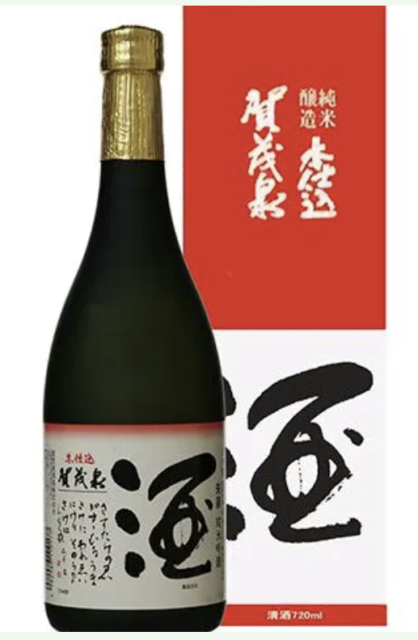
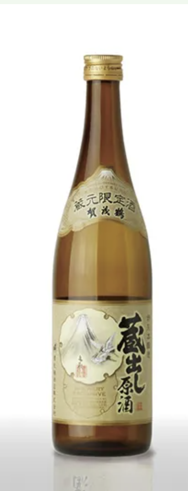
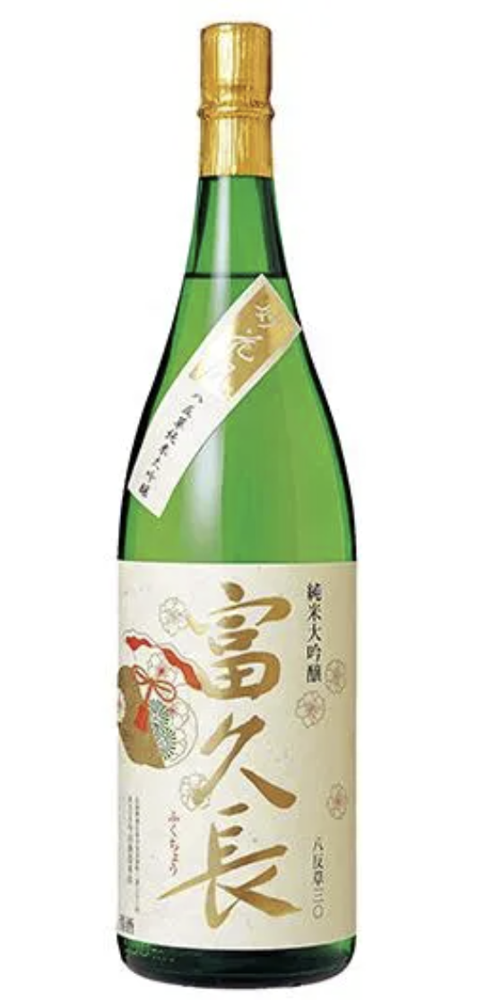

쇼와 40년대 초두부터 순수 쌀로만 빚은 술(純米酒) 양조를 시작한, 순수 쌀술의 개척자적 존재입니다. 탄소 여과를 거치지 않아 황금빛으로 빛나며, 풍부하고 깊은 맛이 특징입니다.

엄선한 히로시마현산 주조용 쌀을 자체적으로 도정해 빚은 술은 감칠맛이 있으면서도 깔끔하고, 질리지 않는 맛이 특징입니다. 다이쇼 시대에 전국 청주 품평회에서 최초로 명예상을 수상한 이후에도, 전국 청주 품평회와 전국 신주 감평회 등에서 수많은 상을 받아왔습니다.

목 넘김이 좋은 청주의 본래 맛인 ‘단맛·신맛·쓴맛·떫은맛’이 하나로 어우러져 녹아드는 일본주입니다.